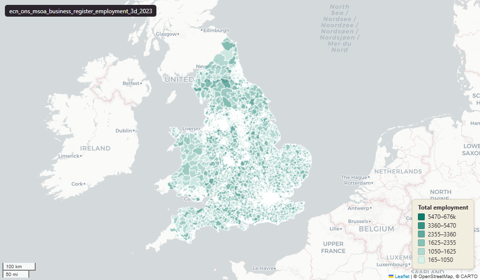

ONS Business Register and Employment Survey (BRES) employment counts for 2023 at Middle Layer Super Output Area (MSOA)¶
BRES Employment - MSOA, 2023, 3D
ecn_ons_msoa_business_register_employment_3d_2023

SOURCE
- Office for National Statistics (ONS). Distributed via Nomis dataset - Business Register and Employment Survey.
DOCUMENTATION
- Nomis dataset page : https://www.nomisweb.co.uk/datasets/newbres6pub
- ONS BRES methodology : https://www.ons.gov.uk/employmentandlabourmarket/peopleinwork/employmentandemployeetypes/methodologies/businessregisterandemploymentsurveybres
- ONS BRES QMI : https://www.ons.gov.uk/employmentandlabourmarket/peopleinwork/employmentandemployeetypes/methodologies/businessregisteremploymentsurveybresqmi
DEFINITIONS
- Employees: people aged 16 or over paid directly through the employer's payroll (full-time, part-time or on a training scheme) on the survey reference date. (ONS BRES QMI)
- Working owners: business owners (sole traders, sole proprietors and partners) who take a share of the profits rather than being paid a wage through the payroll. (ONS BRES QMI)
- Employment is the sum of Employees plus Working owners (ONS BRES QMI).
- Employment is broken down by 3-digit SIC2007 industry group.
SCOPE
- England and Wales. Middle Layer Super Output Area (MSOA) 2021; 7,264 rows. Reference date 1 January 2023.
CRS
- EPSG:27700 (OSGB 1936 / British National Grid).
LICENCE
- Open Government Licence v3.0 (OGL v3.0).
DATA QUALITY CAVEATS
- NULL means the cell was suppressed by ONS for disclosure control; 0 means genuinely zero employment. Suppression bites harder at fine geographies (LSOA) and small industries, so expect many NULLs across the industry row.
- Reading values: a NULL in an industry column does NOT mean the area has no employment in that industry. It means ONS withheld the value because fewer than ~3 businesses operate there in that division/group. Sum across industries with caution.
ENRICHMENT
msoa21hclnm— House of Commons Library readable MSOA name, joined at load on msoa21cd from House of Commons Library MSOA Names v2.3 (13 February 2026). Open Parliament Licence.
NOT IN THIS DATASET
- The narrower Employees-only measure (payroll only, excluding working owners).
- Full-time and part-time breakdowns of Employees.
- Industry percentage form.
- Scotland and Northern Ireland: the MSOA 2021 boundary covers only England and Wales.
LOADED INTO uk_baseline
- Loaded by PNC, 27 May 2026.
Columns¶
| Column | Type | Description / unit |
|---|---|---|
fid |
integer |
|
msoa21cd |
character varying(20) |
Source field GEOGRAPHY_CODE. |
msoa21nm |
character varying(255) |
Source field GEOGRAPHY_NAME. |
sic011_growing_non_perennial_crops |
integer |
Unit: "Persons". SIC2007 3-digit code 011: Growing of non-perennial crops. |
sic012_growing_perennial_crops |
integer |
Unit: "Persons". SIC2007 3-digit code 012: Growing of perennial crops. |
sic013_plant_propagation |
integer |
Unit: "Persons". SIC2007 3-digit code 013: Plant propagation. |
sic014_animal_production |
integer |
Unit: "Persons". SIC2007 3-digit code 014: Animal production. |
sic015_mixed_farming |
integer |
Unit: "Persons". SIC2007 3-digit code 015: Mixed farming. |
sic016_support_actvts_to_agriculture |
integer |
Unit: "Persons". SIC2007 3-digit code 016: Support activities to agriculture and post-harvest crop activities. |
sic017_hunting__trapping&related_srvc_actvts |
integer |
Unit: "Persons". SIC2007 3-digit code 017: Hunting, trapping and related service activities. |
sic021_silviculture&other_forestry_actvts |
integer |
Unit: "Persons". SIC2007 3-digit code 021: Silviculture and other forestry activities. |
sic022_logging |
integer |
Unit: "Persons". SIC2007 3-digit code 022: Logging. |
sic023_gathering_wild_growing_non_wood_products |
integer |
Unit: "Persons". SIC2007 3-digit code 023: Gathering of wild growing non-wood products. |
sic024_support_srvcs_to_forestry |
integer |
Unit: "Persons". SIC2007 3-digit code 024: Support services to forestry. |
sic031_fishing |
integer |
Unit: "Persons". SIC2007 3-digit code 031: Fishing. |
sic032_aquaculture |
integer |
Unit: "Persons". SIC2007 3-digit code 032: Aquaculture. |
sic051_mining_hard_coal |
integer |
Unit: "Persons". SIC2007 3-digit code 051: Mining of hard coal. |
sic052_mining_lignite |
integer |
Unit: "Persons". SIC2007 3-digit code 052: Mining of lignite. |
sic061_extraction_crude_petroleum |
integer |
Unit: "Persons". SIC2007 3-digit code 061: Extraction of crude petroleum. |
sic062_extraction_natural_gas |
integer |
Unit: "Persons". SIC2007 3-digit code 062: Extraction of natural gas. |
sic071_mining_iron_ores |
integer |
Unit: "Persons". SIC2007 3-digit code 071: Mining of iron ores. |
sic072_mining_non_ferrous_metal_ores |
integer |
Unit: "Persons". SIC2007 3-digit code 072: Mining of non-ferrous metal ores. |
sic081_quarrying_stone__sand&clay |
integer |
Unit: "Persons". SIC2007 3-digit code 081: Quarrying of stone, sand and clay. |
sic089_mining&quarrying_n_e_c_ |
integer |
Unit: "Persons". SIC2007 3-digit code 089: Mining and quarrying n.e.c. |
sic091_support_actvts_for_petrol&ng_extrtn |
integer |
Unit: "Persons". SIC2007 3-digit code 091: Support activities for petroleum and natural gas extraction. |
sic099_support_actvts_for_other_mining |
integer |
Unit: "Persons". SIC2007 3-digit code 099: Support activities for other mining and quarrying. |
sic101_prcssng&prsrvng_meat&prod_meat_products |
integer |
Unit: "Persons". SIC2007 3-digit code 101: Processing and preserving of meat and production of meat products. |
sic102_prcssng&prsrvng_fish__crustaceans&molluscs |
integer |
Unit: "Persons". SIC2007 3-digit code 102: Processing and preserving of fish, crustaceans and molluscs. |
sic103_processing&preserving_fruit&vegetables |
integer |
Unit: "Persons". SIC2007 3-digit code 103: Processing and preserving of fruit and vegetables. |
sic104_mfctr_vegetable&animal_oils&fats |
integer |
Unit: "Persons". SIC2007 3-digit code 104: Manufacture of vegetable and animal oils and fats. |
sic105_mfctr_dairy_products |
integer |
Unit: "Persons". SIC2007 3-digit code 105: Manufacture of dairy products. |
sic106_mfctr_grain_mill_prdcts_starches&starch_prdcts |
integer |
Unit: "Persons". SIC2007 3-digit code 106: Manufacture of grain mill products, starches and starch products. |
sic107_mfctr_bakery&farinaceous_prdcts |
integer |
Unit: "Persons". SIC2007 3-digit code 107: Manufacture of bakery and farinaceous products. |
sic108_mfctr_other_food_products |
integer |
Unit: "Persons". SIC2007 3-digit code 108: Manufacture of other food products. |
sic109_mfctr_prepared_animal_feeds |
integer |
Unit: "Persons". SIC2007 3-digit code 109: Manufacture of prepared animal feeds. |
sic110_mfctr_beverages |
integer |
Unit: "Persons". SIC2007 3-digit code 110: Manufacture of beverages. |
sic120_mfctr_tobacco_products |
integer |
Unit: "Persons". SIC2007 3-digit code 120: Manufacture of tobacco products. |
sic131_prep&spinning_textile_fibres |
integer |
Unit: "Persons". SIC2007 3-digit code 131: Preparation and spinning of textile fibres. |
sic132_weaving_textiles |
integer |
Unit: "Persons". SIC2007 3-digit code 132: Weaving of textiles. |
sic133_finishing_textiles |
integer |
Unit: "Persons". SIC2007 3-digit code 133: Finishing of textiles. |
sic139_mfctr_other_textiles |
integer |
Unit: "Persons". SIC2007 3-digit code 139: Manufacture of other textiles. |
sic141_mfctr_wearing_apparel |
integer |
Unit: "Persons". SIC2007 3-digit code 141: Manufacture of wearing apparel, except fur apparel. |
sic142_mfctr_articles_fur |
integer |
Unit: "Persons". SIC2007 3-digit code 142: Manufacture of articles of fur. |
sic143_mfctr_knitted&crocheted_apparel |
integer |
Unit: "Persons". SIC2007 3-digit code 143: Manufacture of knitted and crocheted apparel. |
sic151_tanning&dressing_leather__mfctr_luggage |
integer |
Unit: "Persons". SIC2007 3-digit code 151: Tanning and dressing of leather; manufacture of luggage, handbags, saddlery and harness;dressing and dyeing of fur. |
sic152_mfctr_footwear |
integer |
Unit: "Persons". SIC2007 3-digit code 152: Manufacture of footwear. |
sic161_sawmilling&planing_wood |
integer |
Unit: "Persons". SIC2007 3-digit code 161: Sawmilling and planing of wood. |
sic162_mfctr_products_wood__cork__straw |
integer |
Unit: "Persons". SIC2007 3-digit code 162: Manufacture of products of wood, cork, straw and plaiting materials. |
sic171_mfctr_pulp__paper&paperboard |
integer |
Unit: "Persons". SIC2007 3-digit code 171: Manufacture of pulp, paper and paperboard. |
sic172_mfctr_articles_paper&paperboard |
integer |
Unit: "Persons". SIC2007 3-digit code 172: Manufacture of articles of paper and paperboard. |
sic181_printing&srvc_actvts_related_to_printing |
integer |
Unit: "Persons". SIC2007 3-digit code 181: Printing and service activities related to printing. |
sic182_reproduction_recorded_media |
integer |
Unit: "Persons". SIC2007 3-digit code 182: Reproduction of recorded media. |
sic191_mfctr_coke_oven_products |
integer |
Unit: "Persons". SIC2007 3-digit code 191: Manufacture of coke oven products. |
sic192_mfctr_refined_petroleum_products |
integer |
Unit: "Persons". SIC2007 3-digit code 192: Manufacture of refined petroleum products. |
sic201_mfctr_basic_chem__fertilisers&nitrogen_plastics |
integer |
Unit: "Persons". SIC2007 3-digit code 201: Manufacture of basic chemicals, fertilisers and nitrogen compounds, plastics and synthetic rubber in primary forms. |
sic202_mfctr_pesticides&other |
integer |
Unit: "Persons". SIC2007 3-digit code 202: Manufacture of pesticides and other agrochemical products. |
sic203_mfctr_paints__varnishes&similar_coatings |
integer |
Unit: "Persons". SIC2007 3-digit code 203: Manufacture of paints, varnishes and similar coatings, printing ink and mastics. |
sic204_mfctr_soap&detergents_cleaning&polishing |
integer |
Unit: "Persons". SIC2007 3-digit code 204: Manufacture of soap and detergents, cleaning and polishing preparations, perfumes and toilet preparations. |
sic205_mfctr_other_chemical_products |
integer |
Unit: "Persons". SIC2007 3-digit code 205: Manufacture of other chemical products. |
sic206_mfctr_man_made_fibres |
integer |
Unit: "Persons". SIC2007 3-digit code 206: Manufacture of man-made fibres. |
sic211_mfctr_basic_pharmaceutical_products |
integer |
Unit: "Persons". SIC2007 3-digit code 211: Manufacture of basic pharmaceutical products. |
sic212_mfctr_pharmaceutical_preps |
integer |
Unit: "Persons". SIC2007 3-digit code 212: Manufacture of pharmaceutical preparations. |
sic221_mfctr_rubber_products |
integer |
Unit: "Persons". SIC2007 3-digit code 221: Manufacture of rubber products. |
sic222_mfctr_plastics_products |
integer |
Unit: "Persons". SIC2007 3-digit code 222: Manufacture of plastics products. |
sic231_mfctr_glass&glass_products |
integer |
Unit: "Persons". SIC2007 3-digit code 231: Manufacture of glass and glass products. |
sic232_mfctr_refractory_products |
integer |
Unit: "Persons". SIC2007 3-digit code 232: Manufacture of refractory products. |
sic233_mfctr_clay_building_materials |
integer |
Unit: "Persons". SIC2007 3-digit code 233: Manufacture of clay building materials. |
sic234_mfctr_other_porcelain&ceramic_products |
integer |
Unit: "Persons". SIC2007 3-digit code 234: Manufacture of other porcelain and ceramic products. |
sic235_mfctr_cement__lime&plaster |
integer |
Unit: "Persons". SIC2007 3-digit code 235: Manufacture of cement, lime and plaster. |
sic236_mfctr_articles_concrete__cement&plaster |
integer |
Unit: "Persons". SIC2007 3-digit code 236: Manufacture of articles of concrete, cement and plaster. |
sic237_cutting__shaping&finishing_stone |
integer |
Unit: "Persons". SIC2007 3-digit code 237: Cutting, shaping and finishing of stone. |
sic239_mfctr_abrasive_products&non_metallic_mineral |
integer |
Unit: "Persons". SIC2007 3-digit code 239: Manufacture of abrasive products and non-metallic mineral products n.e.c. |
sic241_mfctr_basic_iron&steel&of_ferro_alloys |
integer |
Unit: "Persons". SIC2007 3-digit code 241: Manufacture of basic iron and steel and of ferro-alloys. |
sic242_mfctr_tubes__pipes__hollow_profiles |
integer |
Unit: "Persons". SIC2007 3-digit code 242: Manufacture of tubes, pipes, hollow profiles and related fittings, of steel. |
sic243_mfctr_other_prdcts_first_processing_steel |
integer |
Unit: "Persons". SIC2007 3-digit code 243: Manufacture of other products of first processing of steel. |
sic244_mfctr_basic_precious&other_nonfrs_metals |
integer |
Unit: "Persons". SIC2007 3-digit code 244: Manufacture of basic precious and other non-ferrous metals. |
sic245_casting_metals |
integer |
Unit: "Persons". SIC2007 3-digit code 245: Casting of metals. |
sic251_mfctr_structural_metal_products |
integer |
Unit: "Persons". SIC2007 3-digit code 251: Manufacture of structural metal products. |
sic252_mfctr_tanks__reservoirs&containers_metal |
integer |
Unit: "Persons". SIC2007 3-digit code 252: Manufacture of tanks, reservoirs and containers of metal. |
sic253_mfctr_steam_generators |
integer |
Unit: "Persons". SIC2007 3-digit code 253: Manufacture of steam generators, except central heating hot water boilers. |
sic254_mfctr_weapons&ammunition |
integer |
Unit: "Persons". SIC2007 3-digit code 254: Manufacture of weapons and ammunition. |
sic255_forging_pressing_stamping&roll_forming_metal |
integer |
Unit: "Persons". SIC2007 3-digit code 255: Forging, pressing, stamping and roll-forming of metal; powder metallurgy. |
sic256_treatment&coating_metals__machining |
integer |
Unit: "Persons". SIC2007 3-digit code 256: Treatment and coating of metals; machining. |
sic257_mfctr_cutlery__tools&general_hardware |
integer |
Unit: "Persons". SIC2007 3-digit code 257: Manufacture of cutlery, tools and general hardware. |
sic259_mfctr_other_fabricated_metal_products |
integer |
Unit: "Persons". SIC2007 3-digit code 259: Manufacture of other fabricated metal products. |
sic261_mfctr_electronic_components&boards |
integer |
Unit: "Persons". SIC2007 3-digit code 261: Manufacture of electronic components and boards. |
sic262_mfctr_computers&peripheral_equipment |
integer |
Unit: "Persons". SIC2007 3-digit code 262: Manufacture of computers and peripheral equipment. |
sic263_mfctr_comms_equipment |
integer |
Unit: "Persons". SIC2007 3-digit code 263: Manufacture of communication equipment. |
sic264_mfctr_consumer_electronics |
integer |
Unit: "Persons". SIC2007 3-digit code 264: Manufacture of consumer electronics. |
sic265_mfctr_instruments&appliances_for_measuring__testing |
integer |
Unit: "Persons". SIC2007 3-digit code 265: Manufacture of instruments and appliances for measuring, testing and navigation; watches and clocks. |
sic266_mfctr_irradiation__electromedical&electrotherapeutic_eqm |
integer |
Unit: "Persons". SIC2007 3-digit code 266: Manufacture of irradiation, electromedical and electrotherapeutic equipment. |
sic267_mfctr_optical_instruments&photographic_eqmt |
integer |
Unit: "Persons". SIC2007 3-digit code 267: Manufacture of optical instruments and photographic equipment. |
sic268_mfctr_magnetic&optical_media |
integer |
Unit: "Persons". SIC2007 3-digit code 268: Manufacture of magnetic and optical media. |
sic271_mfctr_electric_motors__generators__transformer |
integer |
Unit: "Persons". SIC2007 3-digit code 271: Manufacture of electric motors, generators, transformers and electricity distribution and control apparatus. |
sic272_mfctr_batteries&accumulators |
integer |
Unit: "Persons". SIC2007 3-digit code 272: Manufacture of batteries and accumulators. |
sic273_mfctr_wiring&wiring_devices |
integer |
Unit: "Persons". SIC2007 3-digit code 273: Manufacture of wiring and wiring devices. |
sic274_mfctr_electric_lighting_equipment |
integer |
Unit: "Persons". SIC2007 3-digit code 274: Manufacture of electric lighting equipment. |
sic275_mfctr_domestic_appliances |
integer |
Unit: "Persons". SIC2007 3-digit code 275: Manufacture of domestic appliances. |
sic279_mfctr_other_electrical_equipment |
integer |
Unit: "Persons". SIC2007 3-digit code 279: Manufacture of other electrical equipment. |
sic281_mfctr_general_purpose_machinery |
integer |
Unit: "Persons". SIC2007 3-digit code 281: Manufacture of general purpose machinery. |
sic282_mfctr_other_general_purpose_machinery |
integer |
Unit: "Persons". SIC2007 3-digit code 282: Manufacture of other general-purpose machinery. |
sic283_mfctr_agricultural&forestry_machinery |
integer |
Unit: "Persons". SIC2007 3-digit code 283: Manufacture of agricultural and forestry machinery. |
sic284_mfctr_metal_forming_machinery&machine_tools |
integer |
Unit: "Persons". SIC2007 3-digit code 284: Manufacture of metal forming machinery and machine tools. |
sic289_mfctr_other_special_purpose_machinery |
integer |
Unit: "Persons". SIC2007 3-digit code 289: Manufacture of other special-purpose machinery. |
sic291_mfctr_motor_vehicles |
integer |
Unit: "Persons". SIC2007 3-digit code 291: Manufacture of motor vehicles. |
sic292_mfctr_bodies__coachwork__for_motor_vehicles__mfctr_trail |
integer |
Unit: "Persons". SIC2007 3-digit code 292: Manufacture of bodies (coachwork) for motor vehicles; manufacture of trailers and semitrailers. |
sic293_mfctr_parts&accessories_for_motor_vehicles |
integer |
Unit: "Persons". SIC2007 3-digit code 293: Manufacture of parts and accessories for motor vehicles. |
sic301_building_ships&boats |
integer |
Unit: "Persons". SIC2007 3-digit code 301: Building of ships and boats. |
sic302_mfctr_railway_locomotives&rolling_stock |
integer |
Unit: "Persons". SIC2007 3-digit code 302: Manufacture of railway locomotives and rolling stock. |
sic303_mfctr_air&spacecraft&related_machinery |
integer |
Unit: "Persons". SIC2007 3-digit code 303: Manufacture of air and spacecraft and related machinery. |
sic304_mfctr_military_fighting_vehicles |
integer |
Unit: "Persons". SIC2007 3-digit code 304: Manufacture of military fighting vehicles. |
sic309_mfctr_trprt_equipment_n_e_c_ |
integer |
Unit: "Persons". SIC2007 3-digit code 309: Manufacture of transport equipment n.e.c. |
sic310_mfctr_furniture |
integer |
Unit: "Persons". SIC2007 3-digit code 310: Manufacture of furniture. |
sic321_mfctr_jewellery__bijouterie |
integer |
Unit: "Persons". SIC2007 3-digit code 321: Manufacture of jewellery, bijouterie and related articles. |
sic322_mfctr_musical_instruments |
integer |
Unit: "Persons". SIC2007 3-digit code 322: Manufacture of musical instruments. |
sic323_mfctr_sports_goods |
integer |
Unit: "Persons". SIC2007 3-digit code 323: Manufacture of sports goods. |
sic324_mfctr_games&toys |
integer |
Unit: "Persons". SIC2007 3-digit code 324: Manufacture of games and toys. |
sic325_mfctr_medical&dental_instruments |
integer |
Unit: "Persons". SIC2007 3-digit code 325: Manufacture of medical and dental instruments and supplies. |
sic329_other_manufacturing |
integer |
Unit: "Persons". SIC2007 3-digit code 329: Other manufacturing. |
sic331_repair_fabrctd_metal_prdcts__machinery&equipment |
integer |
Unit: "Persons". SIC2007 3-digit code 331: Repair of fabricated metal products, machinery and equipment. |
sic332_installation_industrial_machinery |
integer |
Unit: "Persons". SIC2007 3-digit code 332: Installation of industrial machinery and equipment. |
sic351_electric_power_gen_transmn&dstrb |
integer |
Unit: "Persons". SIC2007 3-digit code 351: Electric power generation, transmission and distribution. |
sic352_mfctr_gas__dstrb_gaseous_fuels |
integer |
Unit: "Persons". SIC2007 3-digit code 352: Manufacture of gas; distribution of gaseous fuels through mains. |
sic353_steam&air_conditioning_supply |
integer |
Unit: "Persons". SIC2007 3-digit code 353: Steam and air conditioning supply. |
sic360_water_collection__treatment&supply |
integer |
Unit: "Persons". SIC2007 3-digit code 360: Water collection, treatment and supply. |
sic370_sewerage |
integer |
Unit: "Persons". SIC2007 3-digit code 370: Sewerage. |
sic381_waste_collection |
integer |
Unit: "Persons". SIC2007 3-digit code 381: Waste collection. |
sic382_waste_treatment&disposal |
integer |
Unit: "Persons". SIC2007 3-digit code 382: Waste treatment and disposal. |
sic383_materials_recovery |
integer |
Unit: "Persons". SIC2007 3-digit code 383: Materials recovery. |
sic390_remediation_actvts&other_waste_mgmt_srvcs |
integer |
Unit: "Persons". SIC2007 3-digit code 390: Remediation activities and other waste management services. |
sic411_development_building_projects |
integer |
Unit: "Persons". SIC2007 3-digit code 411: Development of building projects. |
sic412_cnstr_residential&non_resi_bldngs |
integer |
Unit: "Persons". SIC2007 3-digit code 412: Construction of residential and non-residential buildings. |
sic421_cnstr_roads&railways |
integer |
Unit: "Persons". SIC2007 3-digit code 421: Construction of roads and railways. |
sic422_cnstr_utility_projects |
integer |
Unit: "Persons". SIC2007 3-digit code 422: Construction of utility projects. |
sic429_cnstr_other_civil_engineering_projects |
integer |
Unit: "Persons". SIC2007 3-digit code 429: Construction of other civil engineering projects. |
sic431_demolition&site_prep |
integer |
Unit: "Persons". SIC2007 3-digit code 431: Demolition and site preparation. |
sic432_electrical__plumbing&other_cnstr_installation_actvts |
integer |
Unit: "Persons". SIC2007 3-digit code 432: Electrical, plumbing and other construction installation activities. |
sic433_building_completion&finishing |
integer |
Unit: "Persons". SIC2007 3-digit code 433: Building completion and finishing. |
sic439_other_specialised_cnstr_actvts_n_e_c_ |
integer |
Unit: "Persons". SIC2007 3-digit code 439: Other specialised construction activities n.e.c. |
sic451_sale_motor_vehicles |
integer |
Unit: "Persons". SIC2007 3-digit code 451: Sale of motor vehicles. |
sic452_maintenance&repair_motor_vehicles |
integer |
Unit: "Persons". SIC2007 3-digit code 452: Maintenance and repair of motor vehicles. |
sic453_sale_motor_vehicle_parts&accessories |
integer |
Unit: "Persons". SIC2007 3-digit code 453: Sale of motor vehicle parts and accessories. |
sic454_sale__mntnce&repair_motorcycles&related |
integer |
Unit: "Persons". SIC2007 3-digit code 454: Sale, maintenance and repair of motorcycles and related parts and accessories. |
sic461_whsle_on_a_fee_or_contract_basis |
integer |
Unit: "Persons". SIC2007 3-digit code 461: Wholesale on a fee or contract basis. |
sic462_whsle_agricultural_raw_mtrls&live_animals |
integer |
Unit: "Persons". SIC2007 3-digit code 462: Wholesale of agricultural raw materials and live animals. |
sic463_whsle_food__beverages&tobacco |
integer |
Unit: "Persons". SIC2007 3-digit code 463: Wholesale of food, beverages and tobacco. |
sic464_whsle_hh_goods |
integer |
Unit: "Persons". SIC2007 3-digit code 464: Wholesale of household goods. |
sic465_whsle_info&comms_equipment |
integer |
Unit: "Persons". SIC2007 3-digit code 465: Wholesale of information and communication equipment. |
sic466_whsle_other_mach_equipmt&supplies |
integer |
Unit: "Persons". SIC2007 3-digit code 466: Wholesale of other machinery, equipment and supplies. |
sic467_other_specialised_whsle |
integer |
Unit: "Persons". SIC2007 3-digit code 467: Other specialised wholesale. |
sic469_non_specialised_whsle_trade |
integer |
Unit: "Persons". SIC2007 3-digit code 469: Non-specialised wholesale trade. |
sic471_rtl_sale_in_non_specialised_stores |
integer |
Unit: "Persons". SIC2007 3-digit code 471: Retail sale in non-specialised stores. |
sic472_rtl_sale_food__beverages&tobacco |
integer |
Unit: "Persons". SIC2007 3-digit code 472: Retail sale of food, beverages and tobacco in specialised stores. |
sic473_rtl_sale_automotive_fuel |
integer |
Unit: "Persons". SIC2007 3-digit code 473: Retail sale of automotive fuel in specialised stores. |
sic474_rtl_sale_info&comms_equipment_ |
integer |
Unit: "Persons". SIC2007 3-digit code 474: Retail sale of information and communication equipment in specialised stores. |
sic475_rtl_sale_other_hh_equipment_ |
integer |
Unit: "Persons". SIC2007 3-digit code 475: Retail sale of other household equipment in specialised stores. |
sic476_rtl_sale_cultural&rec_goods_ |
integer |
Unit: "Persons". SIC2007 3-digit code 476: Retail sale of cultural and recreation goods in specialised stores. |
sic477_rtl_sale_other_goods_ |
integer |
Unit: "Persons". SIC2007 3-digit code 477: Retail sale of other goods in specialised stores. |
sic478_rtl_sale_via_stalls&markets |
integer |
Unit: "Persons". SIC2007 3-digit code 478: Retail sale via stalls and markets. |
sic479_rtl_trade_not_in_stores__stalls_or_markets |
integer |
Unit: "Persons". SIC2007 3-digit code 479: Retail trade not in stores, stalls or markets. |
sic491_passenger_rail_trprt__interurban |
integer |
Unit: "Persons". SIC2007 3-digit code 491: Passenger rail transport, interurban. |
sic492_freight_rail_trprt |
integer |
Unit: "Persons". SIC2007 3-digit code 492: Freight rail transport. |
sic493_other_passenger_land_trprt |
integer |
Unit: "Persons". SIC2007 3-digit code 493: Other passenger land transport. |
sic494_freight_trprt_by_road&removal_srvcs |
integer |
Unit: "Persons". SIC2007 3-digit code 494: Freight transport by road and removal services. |
sic495_trprt_via_pipeline |
integer |
Unit: "Persons". SIC2007 3-digit code 495: Transport via pipeline. |
sic501_sea&coastal_passenger_water_trprt |
integer |
Unit: "Persons". SIC2007 3-digit code 501: Sea and coastal passenger water transport. |
sic502_sea&coastal_freight_water_trprt |
integer |
Unit: "Persons". SIC2007 3-digit code 502: Sea and coastal freight water transport. |
sic503_inland_passenger_water_trprt |
integer |
Unit: "Persons". SIC2007 3-digit code 503: Inland passenger water transport. |
sic504_inland_freight_water_trprt |
integer |
Unit: "Persons". SIC2007 3-digit code 504: Inland freight water transport. |
sic511_passenger_air_trprt |
integer |
Unit: "Persons". SIC2007 3-digit code 511: Passenger air transport. |
sic512_freight_air_trprt&space_trprt |
integer |
Unit: "Persons". SIC2007 3-digit code 512: Freight air transport and space transport. |
sic521_warehousing&storage |
integer |
Unit: "Persons". SIC2007 3-digit code 521: Warehousing and storage. |
sic522_support_actvts_for_trprtation |
integer |
Unit: "Persons". SIC2007 3-digit code 522: Support activities for transportation. |
sic531_postal_actvts_under_universal_srvc_obligation |
integer |
Unit: "Persons". SIC2007 3-digit code 531: Postal activities under universal service obligation. |
sic532_other_postal&courier_actvts |
integer |
Unit: "Persons". SIC2007 3-digit code 532: Other postal and courier activities. |
sic551_hotels&similar_accom |
integer |
Unit: "Persons". SIC2007 3-digit code 551: Hotels and similar accommodation. |
sic552_holiday&other_short_stay_accom |
integer |
Unit: "Persons". SIC2007 3-digit code 552: Holiday and other short stay accommodation. |
sic553_camping_grounds__recal_vehicle_parks&trailer_parks |
integer |
Unit: "Persons". SIC2007 3-digit code 553: Camping grounds, recreational vehicle parks and trailer parks. |
sic559_other_accom |
integer |
Unit: "Persons". SIC2007 3-digit code 559: Other accommodation. |
sic561_restaurants&mobile_food_srvc_actvts |
integer |
Unit: "Persons". SIC2007 3-digit code 561: Restaurants and mobile food service activities. |
sic562_event_catering&other_food_srvc_actvts |
integer |
Unit: "Persons". SIC2007 3-digit code 562: Event catering and other food service activities. |
sic563_beverage_serving_actvts |
integer |
Unit: "Persons". SIC2007 3-digit code 563: Beverage serving activities. |
sic581_publishing_books__periodicals&other_publishing_actvts |
integer |
Unit: "Persons". SIC2007 3-digit code 581: Publishing of books, periodicals and other publishing activities. |
sic582_software_publishing |
integer |
Unit: "Persons". SIC2007 3-digit code 582: Software publishing. |
sic591_motion_picture__video&television_programme_actvts |
integer |
Unit: "Persons". SIC2007 3-digit code 591: Motion picture, video and television programme activities. |
sic592_sound_recording&music_publishing_actvts |
integer |
Unit: "Persons". SIC2007 3-digit code 592: Sound recording and music publishing activities. |
sic601_radio_broadcasting |
integer |
Unit: "Persons". SIC2007 3-digit code 601: Radio broadcasting. |
sic602_television_programming&broadcasting_actvts |
integer |
Unit: "Persons". SIC2007 3-digit code 602: Television programming and broadcasting activities. |
sic611_wired_telecommss_actvts |
integer |
Unit: "Persons". SIC2007 3-digit code 611: Wired telecommunications activities. |
sic612_wireless_telecommss_actvts |
integer |
Unit: "Persons". SIC2007 3-digit code 612: Wireless telecommunications activities. |
sic613_satellite_telecommss_actvts |
integer |
Unit: "Persons". SIC2007 3-digit code 613: Satellite telecommunications activities. |
sic619_other_telecommss_actvts |
integer |
Unit: "Persons". SIC2007 3-digit code 619: Other telecommunications activities. |
sic620_computer_programming__consultancy&related_actvts |
integer |
Unit: "Persons". SIC2007 3-digit code 620: Computer programming, consultancy and related activities. |
sic631_data_processing__hosting&related_actvts__web_portals |
integer |
Unit: "Persons". SIC2007 3-digit code 631: Data processing, hosting and related activities; web portals. |
sic639_other_info_srvc_actvts |
integer |
Unit: "Persons". SIC2007 3-digit code 639: Other information service activities. |
sic641_monetary_intermediation |
integer |
Unit: "Persons". SIC2007 3-digit code 641: Monetary intermediation. |
sic642_actvts_holding_companies |
integer |
Unit: "Persons". SIC2007 3-digit code 642: Activities of holding companies. |
sic643_trusts__funds&similar_financial_entities |
integer |
Unit: "Persons". SIC2007 3-digit code 643: Trusts, funds and similar financial entities. |
sic649_other_financial_srvc_actvts__except_insurance&pension_fu |
integer |
Unit: "Persons". SIC2007 3-digit code 649: Other financial service activities, except insurance and pension funding. |
sic651_insurance |
integer |
Unit: "Persons". SIC2007 3-digit code 651: Insurance. |
sic652_reinsurance |
integer |
Unit: "Persons". SIC2007 3-digit code 652: Reinsurance. |
sic653_pension_funding |
integer |
Unit: "Persons". SIC2007 3-digit code 653: Pension funding. |
sic661_actvts_auxiliary_to_financial_srvcs__except_insurance&pe |
integer |
Unit: "Persons". SIC2007 3-digit code 661: Activities auxiliary to financial services, except insurance and pension funding. |
sic662_actvts_auxiliary_to_insurance&pension_funding |
integer |
Unit: "Persons". SIC2007 3-digit code 662: Activities auxiliary to insurance and pension funding. |
sic663_fund_mgmt_actvts |
integer |
Unit: "Persons". SIC2007 3-digit code 663: Fund management activities. |
sic681_buying&selling_own_real_estate |
integer |
Unit: "Persons". SIC2007 3-digit code 681: Buying and selling of own real estate. |
sic682_renting&operating_own_or_leased_real_estate |
integer |
Unit: "Persons". SIC2007 3-digit code 682: Renting and operating of own or leased real estate. |
sic683_real_estate_actvts_on_a_fee_or_contract_basis |
integer |
Unit: "Persons". SIC2007 3-digit code 683: Real estate activities on a fee or contract basis. |
sic691_legal_actvts |
integer |
Unit: "Persons". SIC2007 3-digit code 691: Legal activities. |
sic692_accounting__bookkeeping&auditing_actvts__tax_consultancy |
integer |
Unit: "Persons". SIC2007 3-digit code 692: Accounting, bookkeeping and auditing activities; tax consultancy. |
sic701_actvts_head_offices |
integer |
Unit: "Persons". SIC2007 3-digit code 701: Activities of head offices. |
sic702_mgmt_consultancy_actvts |
integer |
Unit: "Persons". SIC2007 3-digit code 702: Management consultancy activities. |
sic711_architectural&engineering_actvts&related_technical_consu |
integer |
Unit: "Persons". SIC2007 3-digit code 711: Architectural and engineering activities and related technical consultancy. |
sic712_technical_testing&analysis |
integer |
Unit: "Persons". SIC2007 3-digit code 712: Technical testing and analysis. |
sic721_research&experimental_development_on_natural_sciences&en |
integer |
Unit: "Persons". SIC2007 3-digit code 721: Research and experimental development on natural sciences and engineering. |
sic722_research&experimental_development_on_social_sciences&hum |
integer |
Unit: "Persons". SIC2007 3-digit code 722: Research and experimental development on social sciences and humanities. |
sic731_advertising |
integer |
Unit: "Persons". SIC2007 3-digit code 731: Advertising. |
sic732_market_research&public_opinion_polling |
integer |
Unit: "Persons". SIC2007 3-digit code 732: Market research and public opinion polling. |
sic741_specialised_design_actvts |
integer |
Unit: "Persons". SIC2007 3-digit code 741: Specialised design activities. |
sic742_photographic_actvts |
integer |
Unit: "Persons". SIC2007 3-digit code 742: Photographic activities. |
sic743_translation&interpretation_actvts |
integer |
Unit: "Persons". SIC2007 3-digit code 743: Translation and interpretation activities. |
sic749_other_prof__scientific&technical_actvts_n_e_c_ |
integer |
Unit: "Persons". SIC2007 3-digit code 749: Other professional, scientific and technical activities n.e.c. |
sic750_veterinary_actvts |
integer |
Unit: "Persons". SIC2007 3-digit code 750: Veterinary activities. |
sic771_renting&leasing_motor_vehicles |
integer |
Unit: "Persons". SIC2007 3-digit code 771: Renting and leasing of motor vehicles. |
sic772_renting&leasing_personal&hh_goods |
integer |
Unit: "Persons". SIC2007 3-digit code 772: Renting and leasing of personal and household goods. |
sic773_renting&leasing_other_machinery__equipment&tangible_good |
integer |
Unit: "Persons". SIC2007 3-digit code 773: Renting and leasing of other machinery, equipment and tangible goods. |
sic774_leasing_intellectual_property&similar_products__except_c |
integer |
Unit: "Persons". SIC2007 3-digit code 774: Leasing of intellectual property and similar products, except copyrighted works. |
sic781_actvts_employment_placement_agencies |
integer |
Unit: "Persons". SIC2007 3-digit code 781: Activities of employment placement agencies. |
sic782_temporary_employment_agency_actvts |
integer |
Unit: "Persons". SIC2007 3-digit code 782: Temporary employment agency activities. |
sic783_other_human_resources_provision |
integer |
Unit: "Persons". SIC2007 3-digit code 783: Other human resources provision. |
sic791_travel_agency&tour_operator_actvts |
integer |
Unit: "Persons". SIC2007 3-digit code 791: Travel agency and tour operator activities. |
sic799_other_reservation_srvc&related_actvts |
integer |
Unit: "Persons". SIC2007 3-digit code 799: Other reservation service and related activities. |
sic801_private_security_actvts |
integer |
Unit: "Persons". SIC2007 3-digit code 801: Private security activities. |
sic802_security_systems_srvc_actvts |
integer |
Unit: "Persons". SIC2007 3-digit code 802: Security systems service activities. |
sic803_investigation_actvts |
integer |
Unit: "Persons". SIC2007 3-digit code 803: Investigation activities. |
sic811_combined_facilities_support_actvts |
integer |
Unit: "Persons". SIC2007 3-digit code 811: Combined facilities support activities. |
sic812_cleaning_actvts |
integer |
Unit: "Persons". SIC2007 3-digit code 812: Cleaning activities. |
sic813_landscape_srvc_actvts |
integer |
Unit: "Persons". SIC2007 3-digit code 813: Landscape service activities. |
sic821_office_administrative&support_actvts |
integer |
Unit: "Persons". SIC2007 3-digit code 821: Office administrative and support activities. |
sic822_actvts_call_centres |
integer |
Unit: "Persons". SIC2007 3-digit code 822: Activities of call centres. |
sic823_organisation_conventions&trade_shows |
integer |
Unit: "Persons". SIC2007 3-digit code 823: Organisation of conventions and trade shows. |
sic829_business_support_srvc_actvts_n_e_c_ |
integer |
Unit: "Persons". SIC2007 3-digit code 829: Business support service activities n.e.c. |
sic841_admin_the_state&the_economic&social_policy_the_community |
integer |
Unit: "Persons". SIC2007 3-digit code 841: Administration of the State and the economic and social policy of the community. |
sic842_provision_srvcs_to_the_community_as_a_whole |
integer |
Unit: "Persons". SIC2007 3-digit code 842: Provision of services to the community as a whole. |
sic843_compulsory_social_security_actvts |
integer |
Unit: "Persons". SIC2007 3-digit code 843: Compulsory social security activities. |
sic851_pre_primary_education |
integer |
Unit: "Persons". SIC2007 3-digit code 851: Pre-primary education. |
sic852_primary_education |
integer |
Unit: "Persons". SIC2007 3-digit code 852: Primary education. |
sic853_secondary_education |
integer |
Unit: "Persons". SIC2007 3-digit code 853: Secondary education. |
sic854_higher_education |
integer |
Unit: "Persons". SIC2007 3-digit code 854: Higher education. |
sic855_other_education |
integer |
Unit: "Persons". SIC2007 3-digit code 855: Other education. |
sic856_educational_support_actvts |
integer |
Unit: "Persons". SIC2007 3-digit code 856: Educational support activities. |
sic861_hospital_actvts |
integer |
Unit: "Persons". SIC2007 3-digit code 861: Hospital activities. |
sic862_medical&dental_practice_actvts |
integer |
Unit: "Persons". SIC2007 3-digit code 862: Medical and dental practice activities. |
sic869_other_human_health_actvts |
integer |
Unit: "Persons". SIC2007 3-digit code 869: Other human health activities. |
sic871_residential_nursing_care_actvts |
integer |
Unit: "Persons". SIC2007 3-digit code 871: Residential nursing care activities. |
sic872_residential_care_actvts_for_learning_disabilities |
integer |
Unit: "Persons". SIC2007 3-digit code 872: Residential care activities for learning disabilities, mental health and substance abuse. |
sic873_residential_care_actvts_for_the_elderly&disabled |
integer |
Unit: "Persons". SIC2007 3-digit code 873: Residential care activities for the elderly and disabled. |
sic879_other_residential_care_actvts |
integer |
Unit: "Persons". SIC2007 3-digit code 879: Other residential care activities. |
sic881_social_work_actvts_without_accom_for_the_elderly&disable |
integer |
Unit: "Persons". SIC2007 3-digit code 881: Social work activities without accommodation for the elderly and disabled. |
sic889_other_social_work_actvts_without_accom |
integer |
Unit: "Persons". SIC2007 3-digit code 889: Other social work activities without accommodation. |
sic900_creative__arts&entertainment_actvts |
integer |
Unit: "Persons". SIC2007 3-digit code 900: Creative, arts and entertainment activities. |
sic910_libraries__archives__museums&other_cultural_actvts |
integer |
Unit: "Persons". SIC2007 3-digit code 910: Libraries, archives, museums and other cultural activities. |
sic920_gambling&betting_actvts |
integer |
Unit: "Persons". SIC2007 3-digit code 920: Gambling and betting activities. |
sic931_sports_actvts |
integer |
Unit: "Persons". SIC2007 3-digit code 931: Sports activities. |
sic932_amusement&rec_actvts |
integer |
Unit: "Persons". SIC2007 3-digit code 932: Amusement and recreation activities. |
sic941_actvts_business__employers&prof_membership_organisations |
integer |
Unit: "Persons". SIC2007 3-digit code 941: Activities of business, employers and professional membership organisations. |
sic942_actvts_trade_unions |
integer |
Unit: "Persons". SIC2007 3-digit code 942: Activities of trade unions. |
sic949_actvts_other_membership_organisations |
integer |
Unit: "Persons". SIC2007 3-digit code 949: Activities of other membership organisations. |
sic951_repair_computers&comms_equipment |
integer |
Unit: "Persons". SIC2007 3-digit code 951: Repair of computers and communication equipment. |
sic952_repair_personal&hh_goods |
integer |
Unit: "Persons". SIC2007 3-digit code 952: Repair of personal and household goods. |
sic960_other_personal_srvc_actvts |
integer |
Unit: "Persons". SIC2007 3-digit code 960: Other personal service activities. |
sic970_actvts_hhs_as_employers_domestic_personnel |
integer |
Unit: "Persons". SIC2007 3-digit code 970: Activities of households as employers of domestic personnel. |
sic981_undifferentiated_goods_producing_actvts_private_hh |
integer |
Unit: "Persons". SIC2007 3-digit code 981: Undifferentiated goods-producing activities of private households for own use. |
sic982_undifferentiated_srvc_producing_actvts_private_hh |
integer |
Unit: "Persons". SIC2007 3-digit code 982: Undifferentiated service-producing activities of private households for own use. |
sic990_actvts_extraterritorial_organisations&bodies |
integer |
Unit: "Persons". SIC2007 3-digit code 990: Activities of extraterritorial organisations and bodies. |
sic010 |
integer |
SIC2007 code 010 (Employment). Unit: Number of jobs (persons). Source field OBS_VALUE for industry code 010. |
geom |
geometry(MultiPolygon,27700) |
Geometry from uk_baseline.adm_ons_msoa_boundary_2021. |
msoa21hclnm |
text |
House of Commons Library readable MSOA name. Source field msoa21hclnm from House of Commons Library MSOA Names v2.3 (13 February 2026), joined at load on msoa21cd. Open Parliament Licence. |
lad22cd |
text |
Local Authority District 2022 code, best-fit assigned from the feature's Middle Layer Super Output Area (MSOA) 2021 code. The 2022 reference is the 2021 LAD geography that the MSOA 2021 names are scoped to. Joined at load from the ONS MSOA (2021) to LAD (2022) best-fit lookup on msoa21cd. Open Government Licence v3.0. |
lad22nm |
text |
Local Authority District 2022 name, best-fit assigned from the feature's MSOA 2021 code (the 2021 LAD geography matching the MSOA 2021 name scoping). Joined at load from the ONS MSOA (2021) to LAD (2022) best-fit lookup on msoa21cd. Open Government Licence v3.0. |
lad25cd |
text |
Local Authority District 2025 code (current administering authority), best-fit assigned from the feature's MSOA 2021 code. Joined at load from the ONS MSOA (2021) to Ward (2025) to LAD (2025) best-fit lookup on msoa21cd. Open Government Licence v3.0. |
lad25nm |
text |
Local Authority District 2025 name (current administering authority), best-fit assigned from the feature's MSOA 2021 code. Joined at load from the ONS MSOA (2021) to Ward (2025) to LAD (2025) best-fit lookup on msoa21cd. Open Government Licence v3.0. |